TARKOV
Ключи
| Иконка | Название | Локация | Лут | Что открывает |
|---|---|---|---|---|
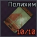 |
Ключ-карта от склада TerraGroup | Завод | Ключ-карта для доступа в складское помещение TerraGroup, расположенное внутри химического завода № 16.
Лут внутри:
|
|
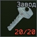 |
Ключ от выхода с Завода | Завод / Таможня / Развязка | 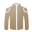 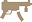 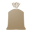 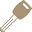 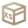 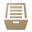 |
5 дверей:
|
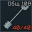 |
Ключ от комнаты 108 общежития | Таможня | 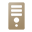 |
Дверь комнаты 108 трёхэтажного общежития. Внутри есть системный блок и выдвижной ящик. |
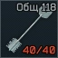 |
Ключ от комнаты 118 общежития | Таможня | Дверь комнаты 203 трёхэтажного общежития. Внутри есть квест. Ключ необходим для выполнения квеста Тряхнуть кассира. | |
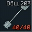 |
Ключ от комнаты 203 общежития | Таможня |
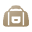 | Дверь комнаты 203 трёхэтажного общежития. Внутри есть квест. Ключ необходим для выполнения квеста Тряхнуть кассира. |
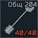 |
Ключ от комнаты 204 общежития | Таможня | Дверь комнаты 204 трёхэтажного общежития. Внутри есть сейф, оружие, боеприпасы, оружейные части и моды. | |
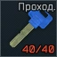 |
Ключ от проходной общежития | Таможня |
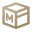 |
Дверь проходной двухэтажного общежития. Внутри есть оружие, оружейные части и моды, 2 патронных ящика, оружейный ящик и возможно ключи (104 или 105). |
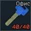 |
Ключ от офиса таможни | Таможня | Дверь офиса таможни. Внутри есть сейф, сумка, куртка, системные блоки, провизия, предметы для бартера, снаряжение и возможно ключ. Необходим для прохождения квеста Посылка из прошлого. | |
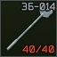 |
Ключ ЗБ-014 | Лес | Данный ключ открывает бункер у забора (ЗБ-014) на локации Лес. Также там возможно выйти с локации, если вы заспавнились за ЧВК со стороны блокпоста ООН. За дверью открываемой ключом находится большой военный ящик - где может заспавниться редкое оружие. | |
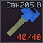 |
Ключ от номера 205 восточного крыла Санатория | Берег |
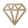 |
Один из полезных ключей на локации Берег. Позволяет вам попасть в комнату 205 восточного крыла, а также перейти по балкону в номер 206 (для которого есть свой ключ). |
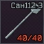 |
Ключ от кабинета 112 западного крыла Санатория | Берег | Ключ от кабинета в санатории, с номером 112 в западном крыле. Медицинское помещение. Стоит посетить, если вы ищите промышленный лут для квеста Терапевта или Миротворца. Ключ так же необходим для квеста Лыжника - Витамины. Часть 1 | |
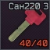 |
Ключ от номера 220 западного крыла Санатория | Берег |
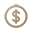 |
Еще один очень полезный ключ на локации Берег. Позволяет попасть в небольшую комнату, но с большим количеством находимых предметов. |
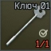 |
Ключ 01 | Лабиринт | Старый ключ, гравировку на нём не разобрать. Может пригодиться, чтобы выжить в Лабиринте. Открывает комнату с кнопкой для слива токсичного бассейна на месте спавна №1 | |
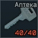 |
Ключ от аптеки НекрусФарм | Развязка | Ключ от аптеки НекрусФарм в ТК Ультра на локации Развязка. Открывает аптеку, которая находится на первом этаже ТК Ультра (уровень парковки) справа от эскалатора на входе в ТК со стороны IDEA. | |
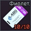 |
Ключ-карта TerraGroup Labs (Фиолетовая) | Лаборатория | Ключ открывает кладовую, с очень ценным лутом находящаяся в комнате охраны (R23), дверь находится напротив двери в Арсенал охраны. | |
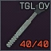 |
Ключ от офиса управляющего в TerraGroup Labs | Лаборатория | Ключ открывает обе двери в Офис управляющего - помещение со стеклянными стенами, напротив Ангара. Там спавнится ценный лут, но помещение просматривается и простреливается со всех сторон. | |
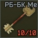 |
Ключ РБ-БК (Меченый) | Резерв | Меченую комнату в подвале чёрной пешки | |
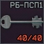 |
Ключ РБ-ПСП1 | Резерв | Одну из четырёх прозрачных решётчатых дверей продовольственного склада под землёй | |
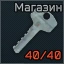 |
Ключ от подсобки в магазине | Маяк | Дверь в подсобку придорожного магазина который расположен на локации Маяк. Магазин находится справа от главной дороги. Немного недоходя до моста ведущего на очистные сооружения. Внутри надо найти синюю дверь. | |
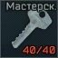 |
Ключ от подсобки в магазине | Маяк | Открывает времянку, расположенную к востоку от водоочистной станции на локации Маяк. Рядом с правым входом на водоочистительную станцию. Возможен спавн Военный аккумулятор 6-СТЭН-140-М (под столом) |